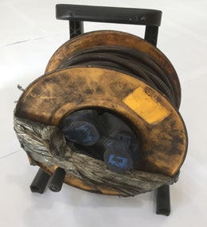
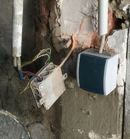

Für die fachgerechte Durchführung der Prüfung ist die Prüfperson verantwortlich.
Bei der Prüfung muss der Schutz gegen elektrischen Schlag und Lichtbogenbildung jederzeit gewährleistet sein.
Prüfgeräte und Zubehör müssen für die Prüfungen geeignet sein.
Bei der Prüfung sind die relevanten elektrotechnischen Bestimmungen zu beachten.
Siehe auch: Anhang B „Gesetze, Vorschriften, Regeln, Informationen, Normen“
Prüfungen werden nach Ordnungsprüfungen und technischen Prüfungen unterschieden.
Ordnungsprüfungen sind beispielsweise
Technische Prüfungen sind:
Je nach räumlicher Eigenart oder Gegebenheit, z. B. Baustelle, feuergefährdete Betriebsstätte, oder je nach Art des zu prüfenden Betriebsmittels, z. B. Rolltor, Industrieroboter, Krananlage, Kreissäge, kann der Prüfumfang neben den rein elektrischen Prüfungen auch weitere Prüfungen erfordern, die von hierzu befähigten Personen durchzuführen sind, siehe auch Anhang C.
Die Dokumentation (siehe Kapitel 8) stellt den Abschluss der Prüfung dar und bildet die Grundlage für die nächste Prüfung.
| Hinweis |
| Informationen zur praktischen Durchführung der wiederkehrenden Prüfungen elektrischer Anlagen und Betriebsmittel können den DGUV Informationen 203-070 „Wiederkehrende Prüfungen ortsveränderlicher elektrischer Betriebsmittel – Fachwissen für Prüfpersonen“ und 203-072 „Wiederkehrende Prüfungen elektrischer Anlagen und ortsfester Betriebsmittel – Fachwissen für Prüfpersonen“ entnommen werden. |
Das Besichtigen der elektrischen Anlagen und Betriebsmittel ist ein wichtiger Bestandteil der technischen Prüfung und ist immer als erster Prüfschritt durchzuführen. Hierbei sind äußerlich erkennbare Mängel und Schäden sowie die Eignung für den Einsatzzweck festzustellen.
| Besonderer Hinweis |
| Die Praxis zeigt, dass bereits durch eine sorgfältige Sichtprüfung der größte Teil der Mängel festgestellt werden kann. |
 |
 |
| Abb. 5 Defekter Leitungsroller | Abb. 6 Defekte Installation |
Durch das Messen wird festgestellt, ob die Wirksamkeit der Schutzmaßnahmen gegen elektrischen Schlag sichergestellt ist. Dabei ist zu überprüfen, ob die festgelegten sicherheitstechnischen Grenzwerte eingehalten und die Messergebnisse für das Prüfobjekt typisch sind.
Die Messungen müssen mit geeigneten Mess- und Prüfgeräten nach der jeweils anzuwendenden Norm, z. B. DIN EN 61557 (VDE 0413), durchgeführt werden.
Eine Funktionsprüfung des ortsveränderlichen oder ortsfesten elektrischen Betriebsmittels sowie der elektrischen Anlage oder an Teilen hiervon ist insoweit vorzunehmen, wie es zum Nachweis der Sicherheit erforderlich ist.
Hierzu zählen insbesondere Funktions- und Sichtprüfung an:
Die Ergebnisse der Prüfungen vor der ersten Inbetriebnahme sowie nach Instandsetzung sind wichtige Grundlagen für die wiederkehrenden Prüfungen.
Da diese DGUV Information nur die Organisation der wiederkehrenden Prüfungen beschreibt, sind die Hinweise zu den Prüfungen vor der ersten Inbetriebnahme sowie nach Instandsetzung im Anhang A zu finden.